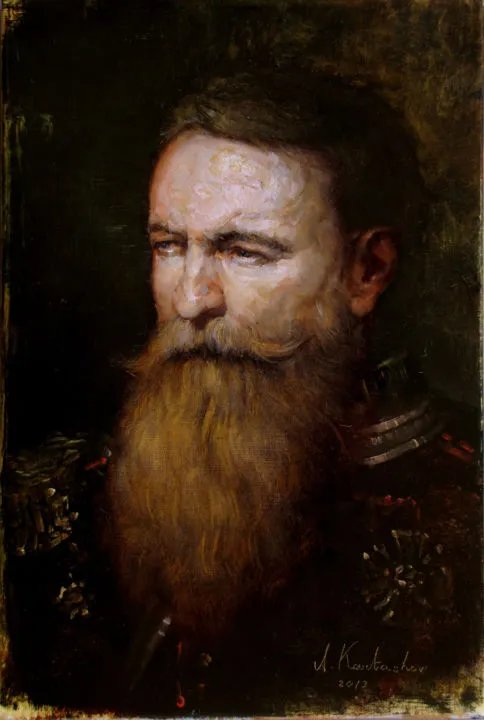

Mahan’s man · widower of a fortnight · the officer who walked into the Boston house and did not walk out · the one who chose to stay and help her remember
Rear Admiral Stephen Kent, United States Navy, was born in St. Louis, Missouri, and was fifty-nine years of age at the time of his disappearance. He held flag rank, having risen through a career that began under Captain Alfred Thayer Mahan and passed through a Boston ship-of-the-line in the 1890s and a varied series of postings in Washington and elsewhere during the late war.
He was, by the testimony of every officer who served with him and every man who served under him, a quiet and competent flag officer of the Mahanian school: schooled in sea power as doctrine, schooled in patience as method. He believed in American values; he believed, more particularly, that persuasion must take into account the material concerns of the persuaded. He was a pragmatist before he was an idealist, which is to say that he was an idealist who had learned what idealism costs.
He was a married man for the greater part of his adult life. His wife was, at the time of her recent passing, institutionalised in a private facility — her decline, by the medical record, consistent with senile dementia. He visited her religiously: every Christmas, every Easter. He had done so for years. The visits had grown long enough ago to have a shape, and the shape was that she did not always know him.
A heavy-set, full-bearded man of medium build. The beard is substantial — close to the chest at its longest, in the older naval style of officers of the previous century rather than the clean-shaven fashion of the present service. Auburn going to chestnut, with no great quantity of grey yet, though the hair at the temples is beginning. The face is weathered by sea air and by the long indoor years that followed it: lined across the forehead, set about the eyes. Caucasian. He carries himself stiffly — a stiffness the surgeon who attended him in his fifties attributed to the long sea posture rather than to any specific injury of service. Hard of hearing in his later years; the impairment is listed on the medical sheet but was not, by his preference, accommodated in conversation. He preferred that one repeat oneself.
The portrait in the wardroom collection, reproduced as the head of this file, shows him in dress blues with the epaulettes of flag rank, looking somewhat aside and downward, as if from a quarterdeck at a thing on the water that has not yet decided what it is. The painter is not named on the record returned to the Board. The sitting is undated, and the Board does not speculate.
The character sheet records his traits in five words: taciturn, loyal, skeptical, straightforward, attentive. The five describe a particular kind of officer — one who listens before he speaks, who is hard to flatter and harder to deceive, and who, when he commits, commits without reservation. The five do not describe a man easily turned. They will be relevant to what follows.
The investigator entered the scenario at the standard starting Sanity of POW × 5 = 99 and ended at 25. The precise distribution of the loss across the evening is not preserved on the present file — whether bled out incident by incident or taken in one or two larger blows is no longer recoverable from the record. What is preserved is the outcome: he ended the night at the very threshold at which a permanent break with reality becomes the most parsimonious account of his behaviour. A loss of one-fifth or more of current Sanity in a single roll would have tipped him from the temporary into the indefinite. The Board is content to record that the relevant threshold was, in functional terms, crossed.
Cthulhu Mythos is recorded at 0. The Occult skill is recorded at 5, base. No spells. No tomes. No prior encounters with strange entities are listed on the sheet — he came into the Boston house with no defences of theory or experience.
The skill list is recognisably that of a senior naval officer of the period: a wide intellectual and social base, strong in command and observation, light in the practical and the manual. The high scores cluster in two regions — the perceptive (Spot Hidden 65) and the executive (Law, Intimidate, Persuade, History, First Aid, Drive Auto, all in the 50–55 range, suitable to a man who has spent decades signing for things, briefing politicians, and being driven to engagements). The strong gap between his INT of 80 and his Library Use of 20 is the gap of a man who is intelligent in the room and not in the archive — an operational intelligence, not a scholarly one.
The profile shows a man who would notice a thing in a room before anyone else (Spot Hidden 65) but be slow to hear it across one (Listen 20 — consistent with the hard-of-hearing entry under Injuries & Scars). He could compose himself for a senator or a foreign attaché (Persuade 55, Intimidate 55, Law 55) and shoot a sidearm at need (Handgun 50). He could not pick a lock, climb a wall, or move quietly through a darkened house. In a haunted residence at night, with his hearing compromised and his moral defences gone, the operational picture was unfavourable from the start.
| Weapon | Regular | Hard | Extreme | Damage | Attacks |
|---|---|---|---|---|---|
| Unarmed | 25 | 12 | 5 | 1d3 + 1d4 | 1 |
Only Unarmed is listed on the present sheet. The Handgun skill stands at 50 by background, but no sidearm is registered as carried on the night in question — a fact the Board notes without comment. He was, at the time of the engagement, a civilian flag officer paying a private call.
| Spending Level | $10 / day |
| Cash | $60 |
| Assets | $1,500 |
| Credit Rating | 30 — comfortable but not wealthy; a flag officer’s pension, not a magnate’s purse |
The character sheet records his ideology in two sentences. The first: he is a political pragmatist. The second, which is the more important: he believes in American values, but that persuasion must take into account their material concerns. This is not the creed of a sentimentalist. It is the creed of a man who has spent thirty-five years briefing congressmen, allocating procurement, and being lied to by people who wanted ships. He knows what people want. He knows that what people say they want and what they will accept are different things. He brings the habit with him into every room he enters.
The Board records this not as character detail but as forensics. A pragmatist of his cast is not naturally susceptible to the supernatural — he does not believe in it, and his Occult of 5 and Cthulhu Mythos of 0 reflect that. He is susceptible, however, to the specific argument that one ought to do for a loved one what one can do, while one can. That is not credulity. That is the operating principle of his life.
Five words on the sheet: taciturn, loyal, skeptical, straightforward, attentive.
Of the five, loyal is the operative term in what followed, and skeptical is the term that, in his case, failed. The skepticism of an officer of his school is a working skepticism — applied to claims, to estimates, to the dispatches of optimistic captains. It is not metaphysical. When the metaphysical presented itself with the face he had longed for, his skepticism had no purchase on it, because the question it asked was not is this real? but do I let her go again?
None recorded prior to entry. The space on the sheet is blank. Whatever the Boston house gave him in the way of phobia or fixation, it gave him at the very end, and there was no further play in which to record it.
None recorded prior to entry. The space on the sheet is blank. He came to the house a virgin in this particular sense, which the Board observes is precisely the category the house preys upon.
| Place | Significance |
|---|---|
| St. Louis, Missouri | Birthplace. Home in the long civilian intervals. The marital house, when he had one ashore. |
| Boston, Massachusetts — the ship of the 1890s | A formative posting. The city he knew best on the eastern seaboard. The city to which he returned, in the end, for a different reason entirely. |
| Washington, D.C. — and various postings, the late war | The administrative half of a flag officer’s life. Briefings, allocations, the war run from desks. He emerged from it tired in a way ships had never tired him. |
| The Boston House — the residence of the scenario | The final entry. See §X. |
It is a coincidence the Board does not consider trivial. The city he served in as a young officer in the 1890s, and the city in which he was last seen in the present year, are the same city. He returned to the place where, three decades earlier, he had been a man not yet married. The Board offers no theory of mind on the matter. It is recorded.
The character sheet provides only the broad shape: service under Mahan in the junior years; a Boston ship in the 1890s; Washington and various locations during the World War; the rank of Rear Admiral by retirement. Specific commands, decorations, and dates of promotion are not recorded on the present file. The timeline below is reconstructed from the sheet and from the dates of his life; it does not invent commands he did not hold.
The Board records the matter of his wife with the care it merits, because every other section of the present file is downstream of it.
She had been institutionalised for a period the sheet does not specify. The diagnosis was, by the medical record, likely dementia — senile dementia in the language of the period; what a later medicine would name more specifically. The disease had taken her gradually, in the way it takes people. The most particular cruelty of the long form is that the body persists while the woman departs, and the man who married her finds himself, year by year, visiting a room in which someone who looks like his wife is being kept comfortable by professional strangers.
He visited her on Christmas and Easter. The sheet uses the word religiously. The two visits a year mark the calendar of a man whose work and travel had long since detached him from any closer rhythm. On the high holidays he came. He brought, the Board presumes, the photographs — perhaps the same photographs that survive in his effects. He sat with her. By the end, by every account such cases offer, she did not always know him. By the very end, she did not know him at all.
She died some weeks before the scenario. The proximate cause is not recorded in the file the Board has received and is not material to the question before it. What is material is this: the woman he had married had departed long before the body. The grief he carried into the Boston house was therefore a grief of two losses — the actual death, recent, raw; and the longer death of recognition, which had been going on for years and which had now closed.
She did not know him at the end. This is the detail the Board asks the convening authority to hold in mind. It will recur.
The Board presents what is known of the events of the night in the most conservative form available. Witness statements are inconsistent on several points, as one expects in such matters; only the points on which they converge are recorded here.
A private residence in Boston, of a kind known locally to be troubled. The history of the property is not the subject of this file and is in any case better established in other quarters than in the testimony of any witness the Board has interviewed. It is sufficient to say that the property had a reputation; that the reputation was the reason a party of investigators visited it; and that Rear Admiral Kent attended in the company of others whose names the present file does not preserve.
Why he attended is the question. He had no prior interest in such matters. His Occult skill stood at 5, base. His Cthulhu Mythos skill stood at 0. He had no recorded encounters with the strange. He was newly widowed. He had come to Boston, the Board observes, for reasons that are not on the sheet but are not difficult to surmise. A man recently bereaved and lately retired, returning to the city of his young manhood, attaching himself to a party going to a house that was said to be haunted — the Board does not pretend to read his mind. It records the pattern.
The Board has only the broad shape, and presents the broad shape.
Within the house, there was a presence. The party encountered phenomena consistent with a haunting of the type the property is known for. In the course of the night, Rear Admiral Kent encountered, or believed he encountered, a female presence within the building. He came to understand this presence as his wife.
His Sanity, which had entered at 99, was at 25 by the close of the night. Whether the collapse was incremental or catastrophic is no longer recoverable from the record. The Board notes only that a man who has lost three-quarters of his Sanity in a single evening is, by any clinical standard, no longer reliable in his judgments of what he sees. The Board also notes that this is the precise condition the house produces in those it keeps.
The presence did not recognise him. This is the point on which every witness statement converges, and it is the point on which the Board’s reconstruction depends.
The presence did not know who he was. It looked at him as a stranger. And this, paradoxically, is what convinced him. Because the woman he had been visiting on Christmas and Easter for the better part of a decade had also, at the end, not known who he was. The not-knowing was the signature of his wife. The not-knowing matched. He read it as her.
The house offered him, in the form of the haunting, the exact condition of his loss — and offered it as something he could still be of use to. He could not help his wife remember in the institution. He had tried, and the disease had refused him. Here, in this house, with this presence, he could try again. He could stay. He could help her remember.
At the close of the scenario, when the rest of the party departed, Rear Admiral Stephen Kent remained in the house. He did so by choice and over the objections, in some form or other, of his fellow visitors. The Board presumes the objections; no statement of them is preserved.
He took no physical injury that night. His Hit Points are recorded as 11 of 11. He was, in the strict mechanical sense, in perfect health when last seen. He was also, in any sense the Board would care to defend, indefinitely insane — bereaved, delusional, and operating under a fixed idea of duty toward a presence the house had shaped for him.
The party left. He remained. The door closed. No one has seen him since.
The Board finds the following.
That Rear Admiral Stephen Kent, United States Navy, of St. Louis, Missouri, aged fifty-nine, in good physical health and of demonstrated competence throughout his service career, entered a private residence in Boston, Massachusetts, in the company of a party of investigators, in or about the present month.
That his wife, of long marriage, predeceased him by some weeks, having suffered for an extended period from a form of senile dementia under which she had ceased to recognise him.
That within the house he encountered a presence which he identified as his wife.
That the presence did not recognise him, and that he interpreted this failure of recognition as confirmation rather than as refutation, in light of his recent experience.
That he elected, at the close of the night, to remain in the house, with the stated purpose of helping the presence to remember him.
That no witness has reported sighting him since.
That his Sanity, at his disappearance, stood at 25 of 99 — consistent with indefinite insanity and with a fixed delusion of the kind here described.
The phrase is recorded by his own player, in his own hand, as the operative line of the night. The Board accepts it as such. The Rear Admiral did not, in his own understanding, lose anything in the Boston house. He found what he had gone there to find. He stayed with it.
The Board recommends the file be closed.
Status: Unaccounted for. Presumed deceased. No body recovered. Effects: photographs of wife and parents, uniform — returned to the estate.
So entered.